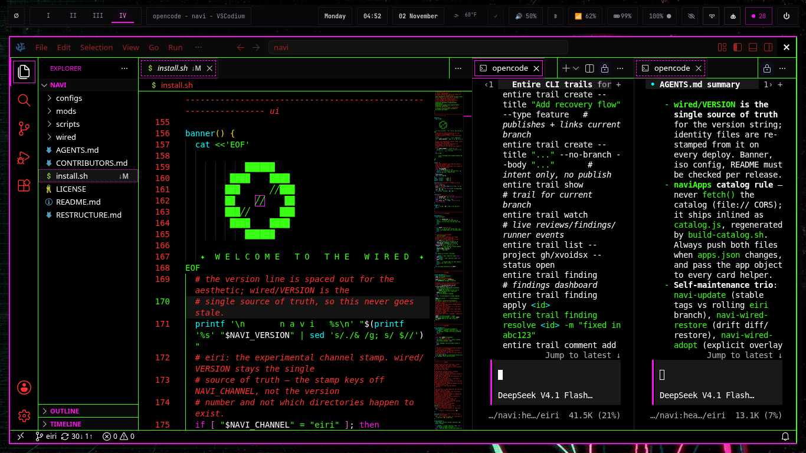

NAVI // NAVICODE
naviCode is xvoidsx's VSCodium distribution — the familiar editor remade in nightshadeNeon, with agentic extensions woven into the workspace. It is navi's graphical editor from eiri, and it ships with navi: setup_navicode in install.sh adds the official VSCodium apt repo and installs the codium package on amd64 and arm64 alike.

SHIPPED · FROM EIRI
naviCode starts from VSCodium — the open-source VS Code builds, without Microsoft's telemetry — and layers navi's own choices on top. Nothing here is a skin over a stranger's defaults; the distribution is the point.
download.vscodium.com), package codium. The extension ecosystem you already know, minus the phone-home.The repo is github.com/xvoidsx/naviCode.
↑ back to topSHIPPED · THE AGENT LAYER
The sidebar agent is Lain, through the pre-installed Rina Hermes ACP extension — the same agent story as the rest of navi, not a separate one invented for the editor. But naviCode doesn't lock you to one agent: the integrated terminal runs navi's terminal agents too.
The screenshot above is Raven's own setup: two DeepSeek agents running in opencode panels beside the code — not the Hermes sidebar, a different agent in a different surface, in the same window. That's the shape of the thing: the editor is where the agents already are, whichever one the work calls for. The wider agent story lives on the agents and navivim-agents pages.
↑ back to topSHIPPED · WITH NAVI
naviCode ships with navi — no separate install step, no navi-extras trip. setup_navicode runs as part of the install, alongside the rest of the desktop layer.
If the repo was unreachable at install time, the installer skips naviCode rather than failing the install — re-run install.sh with --yes later and it picks it up.
github.com/xvoidsx/naviCode · github.com/xvoidsx/navi
↑ back to topCLOSING / REFERENCE
naviCode is not a bonus app — it is one of the tools navi is built with, shipped the way the rest of the system is shipped: themed, agent-ready, and installed by default. The graphical editor and the terminal editor are two windows onto the same wired.
github.com/xvoidsx/naviCode · agents · navivim · navivim-agents
Status note: "shipped" describes project state as of November 2026. — same soul, new window